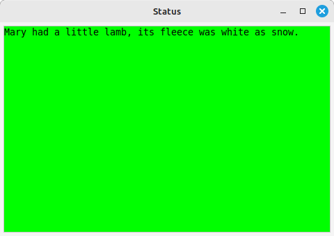
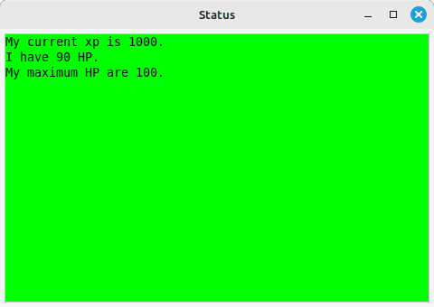

This is the second of a four-part tutorial, showing you how Axmud's pre-configured worlds were created. In this part we'll discuss the Status task, which keeps track of your character's XP, health points and so on. See Section 11 for some essential information on using this task.
Configuring the Status task is optional; many users decide to configure only the automapper, as discussed in the previous Section. However, the time spent in configurating the task may be literally life-saving, so it is often worth the effort.
Once again, you must be familiar with regular expressions/regexes/patterns (we use these terms interchangeably). Section 6 of the Axmud Guide tells you everything you need to know, so read that first, if necessary.
The Status task collects information about your character in several ways.
In most worlds, you can type a command like score or sc, which may produce a response like this:
You are Bilbo the unaccomplished.
You have 90/100 HP, 40/50 MP and 5/99 SP.
You have 1000 XP. You need 200 XP for the next level.
You have 15 QP.
You are feeling brave.
At many worlds, the command prompt contains a useful summary of this information:
hp: 90/100 mp: 40/50 sp: 5/99 >
In case you don't know, HP means health points. Your character loses HP in a fight, and will probably die when the points reach zero.
MP means movement (energy) points. At some worlds, movement between rooms is much slower (or becomes impossible) when your character's movement points are too low. SP means social points. At some worlds, communicating over public channels consumes social points, which prevents gregarious players from shouting too much.
XP are experience points, awarded when your character kills enemies or completes tasks. QP are quest points, awarded when pre-scripted adventures are completed.
Most worlds use at least a few of these values, though not necessarily with the same names. If the world tracks your health with flibbles and rewards you, when you kill a monster, with flubbles, we can handle those values as if they were HP and XP.
Indeed, the Status task is not limited to collecting HP, MP, SP, XP and QP. We can design patterns that will collect any kind of data, and we can display that data in the task window and in the coloured gauges at the bottom of the main window.
Let's start by writing some patterns that match the output of the score command.
You are Bilbo the unaccomplished.
You have 90/100 HP, 40/50 MP and 5/99 SP.
You have 1000 XP. You need 200 XP for the next level.
You have 15 QP.
You are feeling brave.
The first and last lines are irrelevant; we can ignore them.
The fourth line contains a single value, so let's start with that one. The following pattern matches it:
^You have .* QP\.
As a quick reminder: the ^ character means that this pattern matches the start of a line. The . character means 'any character', so we must escape it with a backslash; \. means 'a literal full stop/period'.
.* means 'any number of characters, including none at all'. It will capture the 15 in 15 QP.
We need to tell the Status task which part of the line is the important part, and for that we use groups. Everything inside a pair of brackets is a group.
^You have (.*) QP\.
So now we have a pattern that matches the line You have 15 QP., and which has a single group matching the number we actually want, 15. Here's how to add it to the Status task.
From now on, whenever you type score, the Status task's window should be updated.
Continuing with the example above, in the third line there are two numbers we'd like to collect.
You have 1000 XP. You need 200 XP for the next level.
Therefore we need a pattern that contains two groups. the first one capturing the 1000, the second one capturing the 200.
^You have (.*) XP\. You need (.*) XP for the next level\.
This pattern must be added in the edit window twice. For the first group:
For the second group:
The second line contains six pieces of data, so we need a pattern with six groups! Let's add them two at a time.
You have 90/100 HP,
The line contains a forward slash character. In your pattern, this character must be escaped: use \/.
^You have (.*)\/(.*) HP,
Now we can add the middle section:
40/50 MP
Which matches the pattern:
(.*)\/(.*) MP
Finally the end section:
and 5/99 SP.
Which matches the pattern:
and (.*)\/(.*) SP\.
Putting them all together, we get this pattern:
^You have (.*)\/(.*) HP, (.*)\/(.*) MP and (.*)\/(.*) SP\.
Which matches the whole line, using six groups:
You have 90/100 HP, 40/50 MP and 5/99 SP.
The complete pattern must be added six times, once for each group. In the Status task variable box, use the following items:
By the way, although (.*) is adequate to capture the 1000 in You have 1000 XP, there is a better way.
In regular expressions (patterns), \d means 'any digit', so \d+ means 'any sequence of digits (but at least one of them)'. \d+ will capture the numbers 5, 50 and 5000, but it won't capture a number written using any other characters, for example 1,000,000 or 3.14.
When you are capturing values like health points or movement points, you should probably use (\d+) instead of (.*).
^You have (\d+)\/(\d+) HP, (\d+)\/(\d+) MP and (\d+)\/(\d+) SP\.
Now we'll discuss how to display that data in the Status task's window.
The window can contain any text you like. For example, you could clear the contents of the box, and then insert this:
Mary had a little lamb, its fleece was white as snow.
Click the Save button at the bottom of the window, then type ;resettask status.

Status task variables such as xp_current should be enclosed by the characters @...@, for example:
@xp_current@
@health_points@
@health_points_max@
If you forget the @...@ characters, then you will see the words xp_current themselves.
The other variables used in the example above were energy_points, energy_points_max, social_points, social_points_max, qp_current and xp_next_level.
You can use these variables in any order, accompanied by any text you like. For example:
My current xp is @xp_current@.
I have @health_points@ HP.
My maximum HP are @health_points_max@.

Most people will prefer to use less text, with several variables on the same line. Perhaps something like this:
HP: @health_points@ / @health_points_max@
XP: @xp_current@, @xp_next_level@
We can also customise the coloured gauges at the bottom of the Status task window.
Gauges are normally made up of two values, a 'current' and a 'maximum'. For example, let's create a gauge showing current and maximum health points:
Axmud provides a number of Status task variables. Here's a quick summary of the most useful ones. In most cases, their meanings should be obvious.
Don't forget that you can use these variables for any purpose you like. If your favourite world doesn't have magic points, but does have wibble points, then you could assign wibble points to magic points (if that's convenient for you.)
First, your character's health points and so on.
health_points, health_points_max
magic_points, magic_points_max
energy_points, energy_points_max
guild_points, guild_points_max
social_points, social_points_max
For XP, most worlds have a 'current' value. Some worlds also have a value representing 'additional XP needed for the next level' value, or a value representing 'total XP earned' value.
There following variables display XP, quest points and so-called 'Other points (OP)', in case you need a third set of values that behave in the same way.
xp_current, xp_next_level, xp_total
qp_current, qp_next_level, qp_total
op_current, op_next_level, op_total
Your character's level, age, number of lives and alignment (usually a word like 'good' or 'evil').
level, age, life_count, life_max, alignment
Your character's wealth: the number of coins in their purse (or pockets), and their bank balance.
purse_contents, bank_balance
Your character's so-called 'wimpy' setting. Typically, a setting of 20 will mean your character automatically runs away when their health points drop below 20%.
There are two values, the 'remote' value is the one used by the game itself, and the 'local' value is used only by Axmud and its scripts. (Note that local_wimpy_max is a fixed value, always 100.)
remote_wimpy, remote_wimpy_max
local_wimpy, local_wimpy_max
The Status task variables listed above are not collected automatically - you must first design patterns to capture the data you want, then add those patterns to the current world profile, and then display the data in the task window and/or the gauges.
The remainining Status task variables are generated by other tasks, or by the core Axmud code itself. For example, the Attack task, when running, will keep count of the number of fights your character has fought, the number of kills, and the number of times wimpy mode was engaged.
fight_count, kill_count, wimpy_count, fight_defeat_count
interact_count, interact_success_count, interact_fail_count,
interact_fight_count, interact_disaster_count
flee_count, escape_count
death_count, life_status
Several of these values can be combined into single strings, using these variables:
fight_string, interact_string, coward_string
If available (at most worlds, they are not), you can capture details about the opponent you're fighting.
opp_name, opp_level, opp_health, opp_health_max, opp_strength
(Note that you must design patterns so the Attack task can recognise these events; see Tutorial 8).
You can show the names of current profiles:
world, guild, race, char
A summary of your character's affects and stats (which are configured in the same edit window, in the tabs Page 8 and Page 9):
affects, stats
An age unit (e.g. day) is stored in Page 11, it could be used next to the variable age.
age_unit
The variable money_count combines purse_contents and bank_balance in a single value. The variable coward_count combines flee_count and escape_count in a single value.
money_count, coward_count
You can display a list of tasks that are currently running, and whether the Status task is active, or not.
task, task_active
You can show the (real) time, and how long you have been connected to the world.
local_time, session_time
You can display the fictional and real time, according to the world.
time, remote_time
The Status task can keep a temporary count of things that have happened: for example, the number of fights your character has had since lunchtime. The counts are reset by typing ;resetcounter.
The available Status task variables are:
temp_fight_count, temp_kill_count, temp_wimpy_count, temp_fight_defeat_count
temp_interact_count, temp_interact_success_count, temp_interact_fail_count,
temp_interact_fight_count, temp_interact_disaster_count
temp_escape_count, temp_flee_count
temp_xp_count, temp_quest_count, temp_bank_count, temp_purse_count
temp_xp_average, temp_money_count, temp_timer
temp_fight_string, temp_interact_string, temp_coward_string
If you don't want to use one of the standard variables, then you can create as many custom variables as you like.
Now you add the custom variable to the task window, as described above. Don't forget that it must be enclosed by @ characters, e.g. @myvariable@.
Some worlds send information about the game directly to the client. This information is not visible in the main wnidow; it's up to each client to decide how to display it. Axmud uses the information to update the Status task window and the gauges at the bottom of the main window.
The first step is to find out what kind of information is being received, if any.
If data is available, you can tell the Status task to use it. For example, to use MXP data:
You can now update the Status task window and/or the gauges in the normal way.
A few worlds display your character's health points not as a number, but as a bar of characters. For example, the lines below might represent maximum health points and 20% health points, respectively.
HP: ==========
HP: ==
This is how to configure the Status task to capture that data. As always, we'll need a pattern that matches the lines. The pattern should not include the = characters themselves, because otherwise it won't match a line like this, in which your character has almost no health points:
HP:
Here is a suitable pattern containing a single group. The group should match all of the = characters.
^HP: (.*)
Now we can add this pattern:
Note that, in this case, the Data type box only includes a few Status task variables; you can't use any of the others (or a custom variable.)
When configuring a world, the final step is usually to detect when your character has died, fallen asleep or passed out. When these events are detected, the background colour of the Status task window changes (just in case your attention is elsewhere).
This should be quite simple. Just design some patterns that match lines like YOU ARE DEAD!, and add them to the current world profile.